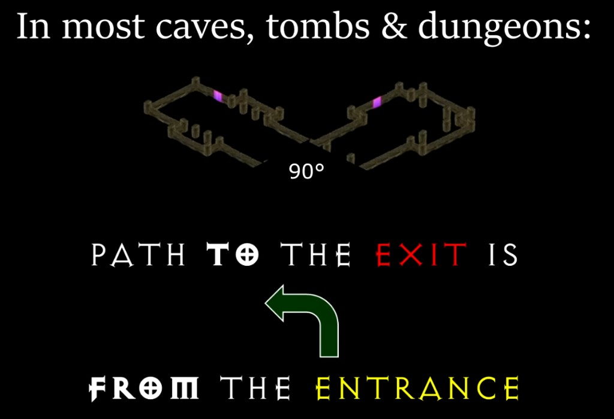
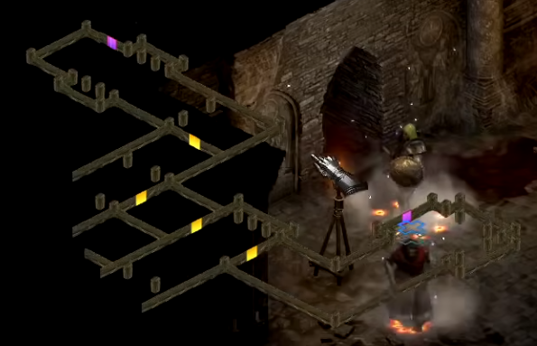
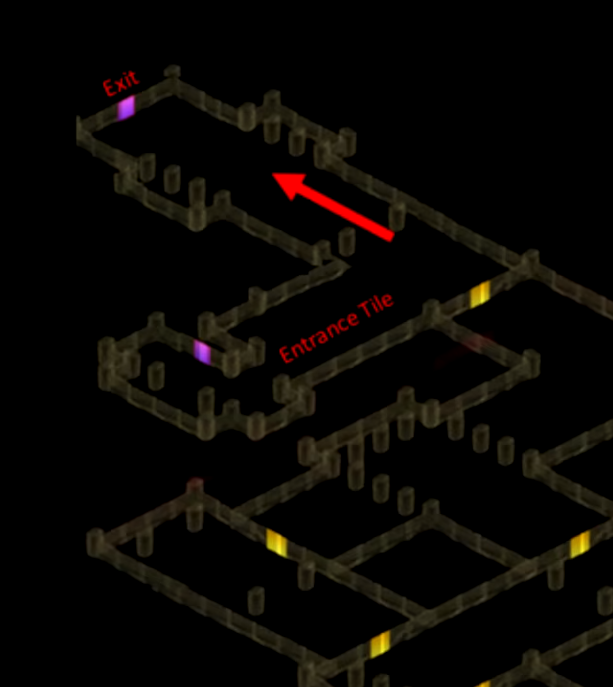
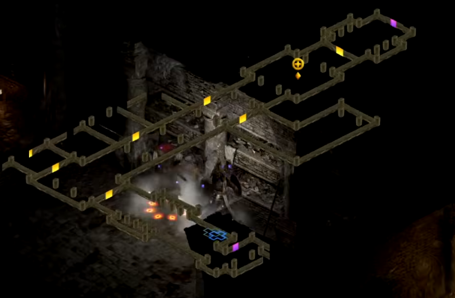
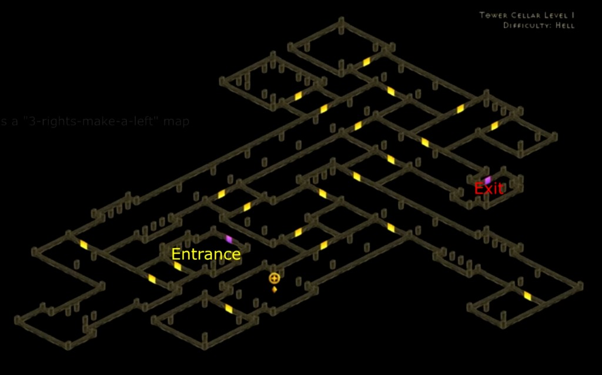
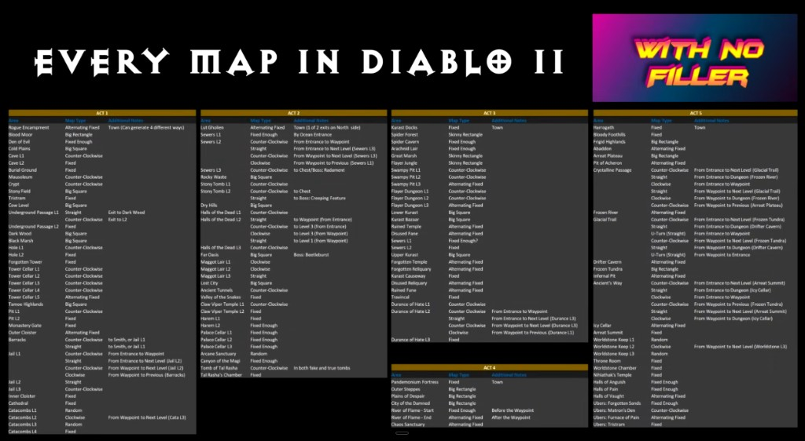

D2R Map Reading: Entrance-Tile-Navigation
Forschungsnotiz für spätere Bot-Pathing-Phasen. Diablo II generiert viele Gebiete nicht völlig frei, sondern setzt vordefinierte Tiles zusammen. Bei vielen Innenkarten bestimmt die Orientierung des Entrance-Tiles, in welcher relativen Richtung das Exit- oder Ziel-Tile liegt.
Kurzfassung
Für viele Höhlen, Gräber und Dungeons gilt: Erst die Richtung bestimmen, in die das Eingangstile den Spieler "schickt". Danach den Bereich suchen, dessen Pfad relativ dazu Left, Straight oder Right ist.
Für Tower Cellar Level 1-4 ist das Ziel Left: vom Entrance-Pfad aus gesehen 90 Grad gegen den Uhrzeigersinn. Das heißt nicht zwingend: die erste Bildschirm-Abzweigung links nehmen.
Grundprinzip
1. Entrance-Tile erkennen
Das Entrance-Tile ist der Startabschnitt des Gebiets. Es ist nicht identisch mit der Blickrichtung der Treppe oder der Spielfigur. Entscheidend ist die Richtung des verbindenden Gangs oder der einzige Pfad, der aus dem Startabschnitt herausführt.
2. Relative Zielrichtung anwenden
Left bedeutet 90 Grad gegen den Uhrzeigersinn relativ zum Entrance-Pfad, Straight bedeutet gleiche Orientierung, Right bedeutet 90 Grad im Uhrzeigersinn.
3. Nicht nur Bildschirmrichtung
"Links" ist nicht automatisch links auf dem Monitor. Es ist die Perspektive einer Spielfigur, die in Richtung des Entrance-Pfads schaut. In D2R kann das auf dem Automap-Overlay je nach Tile-Orientierung nach Nordost, Nordwest, Südost oder Südwest zeigen.
4. Exit-Tile statt Wegverlauf
Die Regel beschreibt die Orientierung des Ziel-Tiles, nicht zwingend die perfekte Laufroute. Man kann zeitweise in andere Richtungen laufen müssen, um später wieder in die Zielorientierung zu kommen.

Beispiele aus dem Video

Left-Richtung ist
Nordost. Die erste passende Nordost-Abzweigung führt hier zum Exit.



Left-Weg entsteht, muss die Heuristik aufgegeben oder als "backwards map" behandelt werden.

Wichtige Korrektur zur "Left"-Regel
Nicht implementieren als "erste linke Abzweigung nehmen". Die robuste Aussage lautet: Das Ziel-Tile hat eine bestimmte Orientierung relativ zum Entrance-Tile. Der Weg dorthin kann mehrere Zwischenkurven, Sackgassen oder in seltenen Fällen eine "backwards map" enthalten.
Der WithNoFiller-Transcript beschreibt genau diese Grenze: In höheren Schwierigkeitsgraden und größeren Karten kann ein Layout entstehen, in dem direktes Linksabbiegen nicht möglich ist, obwohl Entrance und Exit weiterhin 90 Grad auseinander liegen. In diesem Fall sollte eine spätere Bot-Strategie auf eine allgemeine Exploration oder ein anderes Erkennungsmodell wechseln.
Karten-Kategorien
| Kategorie | Idee | Bot-Relevanz |
|---|---|---|
| Left / Straight / Right | Exit- oder Ziel-Tile liegt in fester relativer Orientierung zum Entrance- oder Waypoint-Tile. | Geeignet für heuristisches Dungeon-Pathing, wenn Tile-Orientierung aus Automap/Memory ableitbar ist. |
| Fixed | Layout ist immer gleich oder hat wenige fest merkbare Varianten. | Kann später über feste Zielpunkte, Pattern oder kleine Lookup-Tabellen abgebildet werden. |
| Fixed Enough | Außenrahmen oder wichtige Features sind stabil, Details variieren. | Gut für grobe Zielkorridore, z. B. "gegenüberliegende Ecke" oder "oberer Rand". |
| Alternating Fixed | Nur wenige vorgebaute Varianten, oft gespiegelt oder rotiert. | Erkennbar über wenige Landmarken; danach deterministische Route möglich. |
| Outdoor | Viele Außenkarten sind Rechtecke/Quadrate mit Regeln zu Rändern, Ecken, Wegen und Camps. | Ergänzt aktuelle Bearing-Explore-Logik; Road-following und Rand-/Ecken-Hypothesen wären relevant. |
| Random | Keine zuverlässige bekannte Zielorientierung. | Nur allgemeine Exploration, Route-Cache, manuelle Aufzeichnung oder später Map-Seed-Ansatz. |
Angular-Map-Katalog
Diese Tabelle ist als Implementierungsnotiz gedacht. Sie basiert auf dem Video-Transcript und Teo1904s Maxroll-Guide. Begriffe sind absichtlich englisch gehalten, weil sie in Speedrun-Quellen so verwendet werden.
Act I
| Gebiet / Startpunkt | Left | Straight | Right |
|---|---|---|---|
| Cave Level 1, vom Entrance | Next Level | Coldcrow | - |
| Mausoleum, vom Entrance | Golden Chest | - | - |
| Crypt, vom Entrance | Golden Chest / Bonebreaker | - | - |
| Underground Passage Level 1, vom Entrance | Next Level | Exit nach Dark Wood | - |
| The Hole Level 1, vom Entrance | Next Level | - | - |
| Forgotten Tower Level 1-4, vom Entrance | Next Level | - | - |
| Barracks, vom Entrance | Jail Level 1 oder Horadric Malus | Jail Level 1 oder Horadric Malus | - |
| Jail Level 1, vom Entrance | Waypoint | Next Level | - |
| Jail Level 1, vom Waypoint | Next Level | - | Barracks |
| Jail Level 2, vom Entrance | Pitspawn Fouldog | Next Level | - |
| Jail Level 3, vom Entrance | Exit | - | - |
| Catacombs Level 2, vom Waypoint | - | - | Next Level |
Act II
| Gebiet / Startpunkt | Left | Straight | Right |
|---|---|---|---|
| Sewers Level 2, vom Entrance | Waypoint | Next Level | - |
| Sewers Level 2, vom Waypoint | Next Level | - | Previous Level |
| Sewers Level 3, vom Entrance | Radament | - | - |
| Stony Tomb Level 1, vom Entrance | Next Level | - | - |
| Stony Tomb Level 2, vom Entrance | Golden Chest | Creeping Feature | - |
| Halls of the Dead Level 1, vom Entrance | Next Level | - | - |
| Halls of the Dead Level 2, vom Entrance | Next Level | Waypoint | - |
| Halls of the Dead Level 2, vom Waypoint | - | Previous Level | Next Level |
| Halls of the Dead Level 3, vom Entrance | Bloodwitch / Horadric Cube | - | - |
| Maggot Lair Level 1-2, vom Entrance | - | - | Next Level |
| Maggot Lair Level 3, vom Entrance | - | Coldworm / Staff of Kings | - |
| Ancient Tunnels, vom Entrance | Golden Chest | - | - |
| Claw Viper Temple Level 1, vom Entrance | Next Level | - | - |
| Correct Tal Rasha's Tomb, vom Entrance | Orifice | - | - |
| Wrong Tal Rasha's Tomb, vom Entrance | Golden Chest | Ancient Kaa in einem Tomb | - |
Act III bis V
| Gebiet / Startpunkt | Left | Straight | Right |
|---|---|---|---|
| Swampy Pits Level 1-2, vom Entrance | Next Level | - | - |
| Flayer Dungeon Level 1-2, vom Entrance | Next Level | - | - |
| Act III Sewers Level 1, vom Sparkling Chest | - | - | Next Level |
| Durance of Hate Level 1, vom Entrance | Next Level | - | - |
| Durance of Hate Level 2, vom Entrance | Waypoint | Next Level | - |
| Durance of Hate Level 2, vom Waypoint | Next Level | - | Previous Level |
| River of Flame, vom Entrance | Hellforge möglich | Waypoint und Chaos Sanctuary | Hellforge möglich |
| Crystalline Passage, vom Entrance | Glacial Trail | Frozen River | Waypoint |
| Crystalline Passage, vom Waypoint | Previous Area | Glacial Trail | Frozen River |
| Glacial Trail, vom Waypoint oder Entrance | Frozen Tundra | Drifter Cavern | Golden Chest / Bonesaw Breaker |
| Ancients Way, vom Entrance | Arreat Summit | Icy Cellar | Waypoint |
| Ancients Way, vom Waypoint | Previous Area | Arreat Summit | Icy Cellar |
| Worldstone Keep Level 2, vom Waypoint | - | - | Next Level |
Outdoor- und Nicht-Angular-Regeln
Act I: Straßen folgen
Viele Act-I-Outdoor-Karten sind Quadrate/Rechtecke mit Wegen zwischen Entrance und Exit. Für Countess relevant: Black Marsh hat Tower und Waypoint häufig nahe am Rand; der Ausgang nach Tamoe Highland liegt laut Quellen nie am unteren linken Rand.
Act II: Ecken lesen
Outdoor-Ziele liegen typischerweise nahe an Ecken. Indents und L-förmige Randstücke können Ecken ausschließen. Lost City hat keinen Valley-of-Snakes-Ausgang in der südlichen Ecke.
Act III: 2x6-Jungle
Spider Forest, Great Marsh und Flayer Jungle verhalten sich wie schmale 2x6-Rechtecke. Camps, Flüsse, Brücken und Pfosten sind wichtige Landmarken. Grobstrategie: häufig nordöstlich und am Fluss orientieren.
Random Maps
Catacombs Level 1 und 3, Arcane Sanctuary sowie Worldstone Keep Level 1 und 3 haben keine bekannte zuverlässige Exit-Orientierung. Für einen Bot wären das Exploration, Route-Cache oder manuelle Vorgaben.
Bot-Implikationen
Für den Countess-MVP ist vor allem Forgotten Tower Level 1-4 = Left vom Entrance relevant. Diese Regel könnte die aktuelle ungerichtete Bearing-Explore-Logik ersetzen oder priorisieren, sobald der Bot Entrance-Tile-Orientierung und lokale Gangrichtungen aus Memory/Automap ableiten kann.
- Tile-Orientierung erfassen: Aus Automap-/Room-Daten oder späterem Map-Graph ableiten, welche Richtung der Entrance-Pfad hat.
- Zielvektor bestimmen: Pro Gebiet eine Regel wie
Left,StraightoderRighthinterlegen. - Kandidaten priorisieren: Abzweigungen, Räume oder RoomEx-Verbindungen bevorzugen, deren Orientierung zum Zielvektor passt.
- Sackgassen markieren: Falsche Kandidaten nicht erneut prüfen; zurück zum Hauptpfad und nächste passende Gelegenheit nehmen.
- Backwards-Map erkennen: Wenn keine passende Abzweigung erreichbar ist oder die Suche zu lange ohne Fortschritt bleibt, Heuristik abbrechen.
- Area-Transition bleibt Ground Truth: Erfolg erst akzeptieren, wenn
world.State.Area.IDden erwarteten Wechsel bestätigt.
Quellen und Transcript-Notizen
-
WithNoFiller: The Code to Navigate Every Diablo 2 Map.
Der Seitenabruf enthielt Metadaten, Kapitel und vollständigen Transcript. Relevante Kapitel:
01:56 How to look at Tiles,05:43 Categories,09:55 Act 1. - Teo1904 / Maxroll: D2R Map Reading. Enthält die tabellarische Left/Straight/Right-Liste, Semi-Static Maps, Static Maps und Random Maps.
- d2maps: Meaning of Right / Straight / Left. Gute Erklärung, dass relative Richtungen vom Entrance-Tile kommen und nicht von Bildschirm-Himmelsrichtungen.
- Hiim PD2 Resources: Pathfinding Guide. Nützliche zweite Darstellung der tile-basierten Pathfinding-Regeln, besonders für Act-I- und Act-II-Notizen.